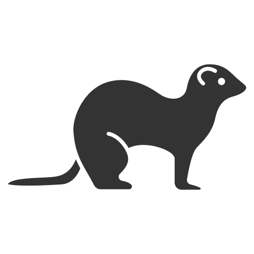

Resources
Find below a list of resources used on this website. For more information about stoats, consider joining our newsletter!
Information
https://www.inaturalist.org/taxa/41808-Mustela-ermineahttps://www.woodlandtrust.org.uk/trees-woods-and-wildlife/animals/mammals/stoat/ https://www.mammal.org.uk/species-hub/full-species-hub/discover-mammals/species-stoat/ https://animaldiversity.org/accounts/Mustela_erminea/
Video
https://www.youtube.com/watch?v=2HFSaxIsJCEhttps://www.youtube.com/watch?v=HESe9voNWXs
Audio
https://www.youtube.com/watch?v=bJkdZVkiP3khttps://www.youtube.com/watch?v=Evvv1Yz72HM
Images
https://pixabay.com/photos/furret-mammal-ermine-tree-trunk-7648976/https://pixnio.com/fauna-animals/ferrets-skunks/short-tailed-weasel-ermine-animal-mustela-erminea#
https://en.wikipedia.org/wiki/Least_weasel#/media/File:Mustela_nivalis_-British_Wildlife_Centre-4.jpg
https://unsplash.com/photos/orange-fox-walking-on-street-OVWn1sbGIYQ
https://unsplash.com/photos/black-and-white-badger-photo-GvSLkDH7XdI
https://unsplash.com/photos/calico-cat-standing-on-grass-field-psPEo8Cgh7U
https://unsplash.com/photos/brown-and-white-bird-flying--YTfSdXKFec